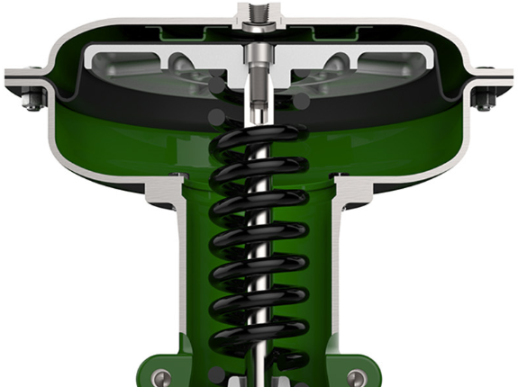

ch3-m2 pass: caution card; spring force on the upper casing
Relieve the spring before you open the diaphragm casing
The upper diaphragm casing carries the full force of the compressed actuator spring. Thread the spring adjuster out until all spring compression is relieved before removing the casing cap screws, or the casing is thrown off.
